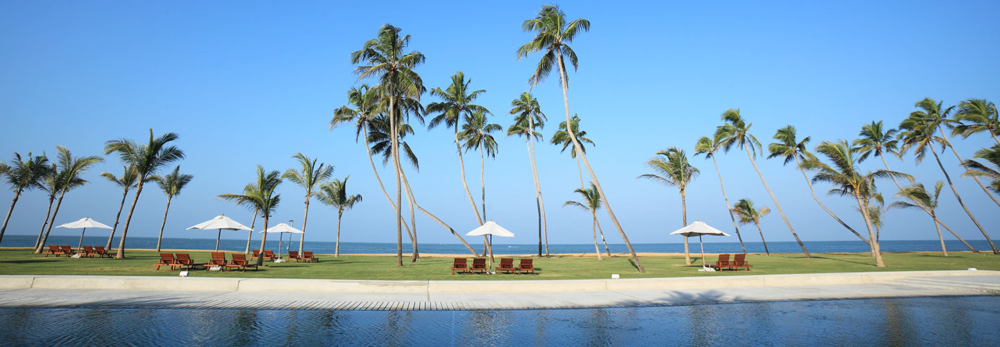

Beaches- Sea, Sun and Sand
Print your foot steps on the palm fringed beaches of Sri Lanka, enjoying the soft whispers of the cooling salty breeze on holiday vacation. By choosing your holiday excursion in fine Sri Lankan Beaches, you entitle yourself to a refreshing experience with the marine world, which includes, exciting water sports, exploring the beautiful aqua life and lazing out under the setting sun that cast a beautiful shades of crimson across the sky.
Day 1
Green Tree Holidays representative will welcome you at the Airport and transfer to a beach hotel in Negombo. At the evening do a city tour in Negombo and go for a boat ride in Dutch channel.Your arrival to Sri Lanka and transfer to Negombo to be checked in at the hotel. The evening will be spent at the Negombo city which is an ideal location for beach-o-holics. Overnight stay at the Hotel
Day 2
After completing a delectable breakfast offered at the hotel, the entire day is allowed to be spent at your leisure. Overnight stay at the Hotel
Day 3
After a delightful breakfast at the hotel, we will be leaving for the city of Bentota – another fine beach location in Sri Lanka that is renowned for the picturesque sun sets and thrilling water sports activities. During the transitwe will be arranging a sightseeing tour of Colombo, opening doors for an exclusive shopping spree moment in the city. In the evening we will be Check in at the hotel in Bentota for an overnight stay.
Day 4
After the morning breakfast at the Hotel, we will beleaving forcity of Galle– another prime spot for renowned beaches in Sri Lanka for a day excursion. On this southern coastal belt, you will not only relish on these wonderful golden sandy beaches, you will also get the opportunity to tap in to the colonial history of Sri Lanka, where the 300 years Old Dutch Fort becomes a vision that none can discount. Enjoying a wonderful morning at the scenic city of Galle, we will be returning to Bentota in the evening, on the way visiting the famous Turtle Hatchery in Kosgoda, operated by the Wild Life Protection Society of Sri Lanka and refreshingly colourful Ambalangoda Mask factory. Overnight stay at Hotel
Day 5
After having breakfast at the hotel 5th day is for your leisure. You may go sightseeing in the city or indulge in the water sport activities that the city is quite famous for.
Day 6
Savouring on a scrumptious breakfast, it’s time to leave to the airport for your departure.